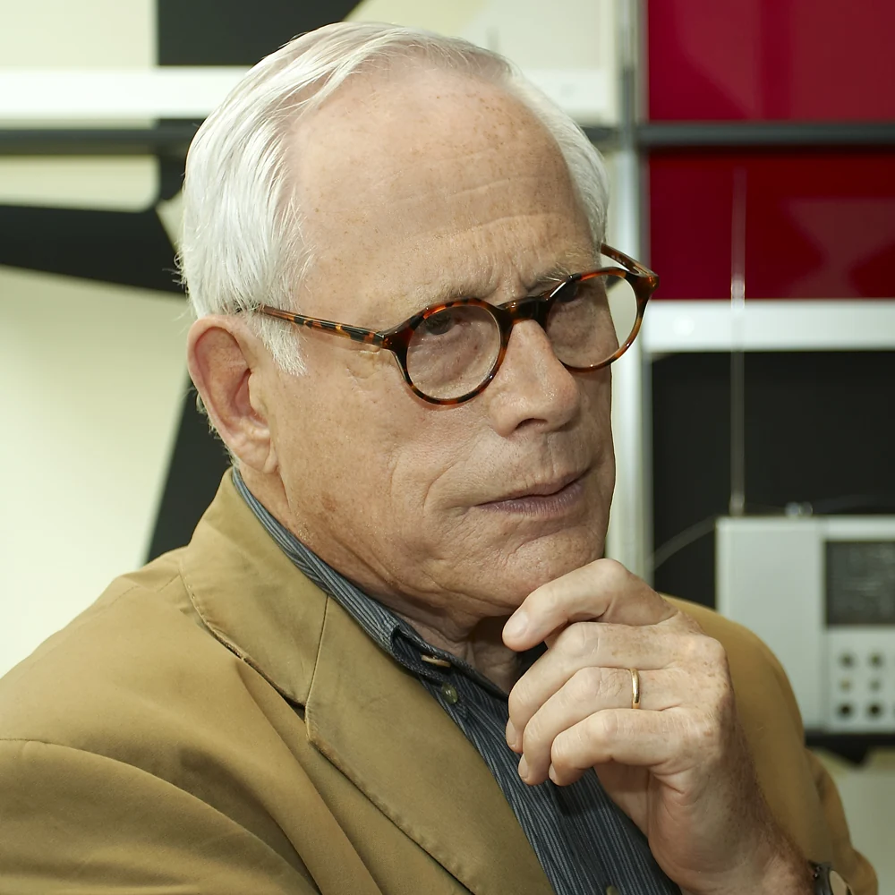
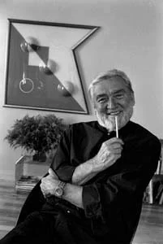
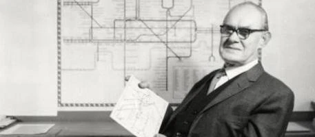
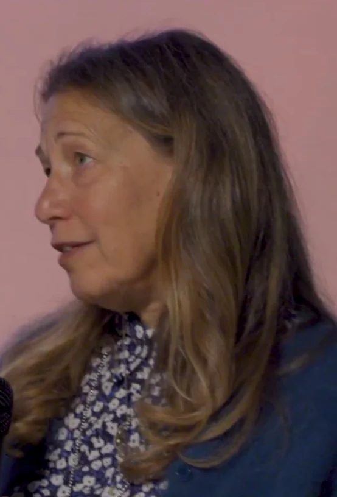

THE ACTUAL PEOPLE, IN THEIR OWN TIME
Faces behind the finds.
These are authentic photographs of the people in the collection. Authors and archival sources are credited below. Open-license photographs retain their listed license; historic portraits retain the rights specified by their original source.
The Apple design teams profile pictures Susan Kare and Jonathan Ive as selected contributors from different periods. Object-level credits identify their roles and the other collaborators behind each work.

Charles & Ray Eames
Photo: Eames Office, courtesy of Luminaire
Displayed with grayscale styling and cropped to fit portrait frames. Local files are resized WebP copies; historical faces are not generated or retouched.
Historical portrait. Copyright retained by the original rights holder; no open license is asserted.
Original source & rights information ↗ (opens in a new tab)


Harry Beck
Photo: Historical publicity photograph, via 20th Century London / Wikipedia
Displayed with grayscale styling and cropped to fit portrait frames. Local files are resized WebP copies; historical faces are not generated or retouched.
Historical low-resolution publicity portrait. Copyright retained by the original rights holder; no open license is asserted.
Original source & rights information ↗ (opens in a new tab)
George Carwardine
Photo: Anglepoise archive, via LightForm
Displayed with grayscale styling and cropped to fit portrait frames. Local files are resized WebP copies; historical faces are not generated or retouched.
Historical portrait. Copyright retained by the original rights holder; no open license is asserted.
Original source & rights information ↗ (opens in a new tab)
Object photograph credits ↗Portrait credit data ↗